Armature reaction and terminal voltage, no-load/internal/external characteristics of separately excited, shunt, series and compound generators, voltage regulation, and parallel operation with equalizer connections — full conceptual build-up with derivations, GATE/IES insights, and solved numericals.
Before power electronics made AC-to-DC conversion cheap and efficient, the DC generator was the only practical way to produce direct current in bulk. A DC generator converts mechanical energy (from a prime mover — a diesel engine, steam turbine, or motor) into electrical energy in the form of direct current, using the principle of electromagnetic induction discovered by Faraday.
Even though large-scale power transmission today is entirely AC (because transformers only work on AC), DC generation is still central to several branches of engineering: electroplating, traction motors, excitation systems of large AC alternators, welding sets, battery charging, and electric braking systems. Understanding how a DC generator's output voltage behaves under load is therefore foundational to the entire DC machines unit — and to a large share of GATE/IES/PSU numerical questions.
A DC generator is not fundamentally different from a DC motor — the same machine can work as either, depending on whether mechanical energy is put in (generator action) or electrical energy is put in (motor action). This reversibility is why the "characteristics" you learn here reappear, in mirrored form, when you study DC motor speed–torque behaviour later.
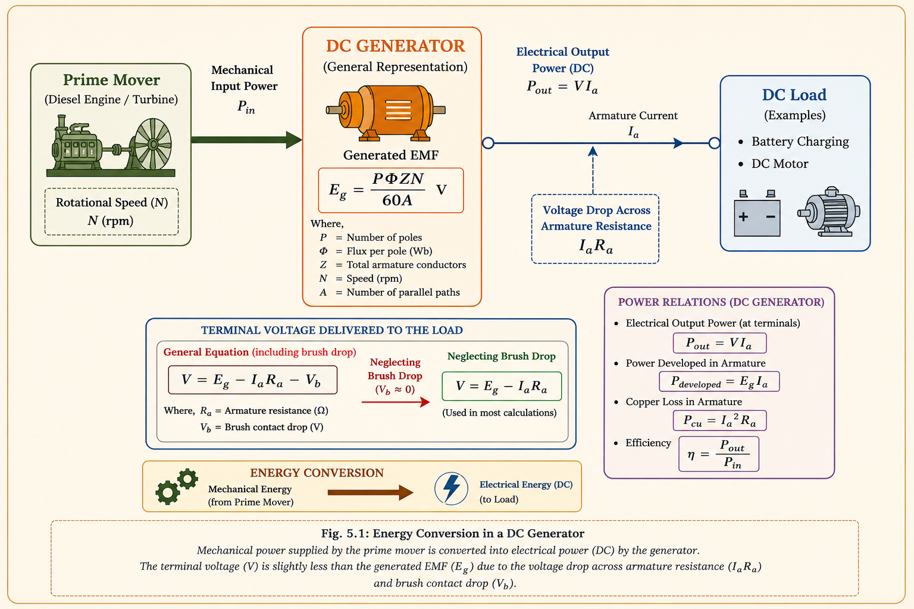
When a DC generator runs at no load, the flux in the air gap is produced entirely by the field winding, and the induced EMF is a fixed value E₀ for a given speed and field current. The moment a load is connected, current begins to flow through the armature conductors. This armature current sets up its own magnetic field — and because the armature m.m.f. axis is fixed in space (along the brush axis) while the field poles are also fixed, the two fields interact. This interaction is called armature reaction.
Think of the field flux as a steady "background" magnetic field and the armature flux as a "crosswind" set up by load current. In a generator with brushes on the geometric neutral axis, this crosswind distorts the resultant flux and — for a generator — has a net demagnetising effect, reducing the useful flux per pole. Less flux means less generated EMF, so the output voltage sags as load increases.
The armature m.m.f. is stationary with respect to the poles (this is the defining feature of a commutator machine), which is why armature reaction in a DC machine behaves very differently from that in an AC synchronous machine.
Three effects act in sequence to bring the terminal voltage below the no-load EMF:
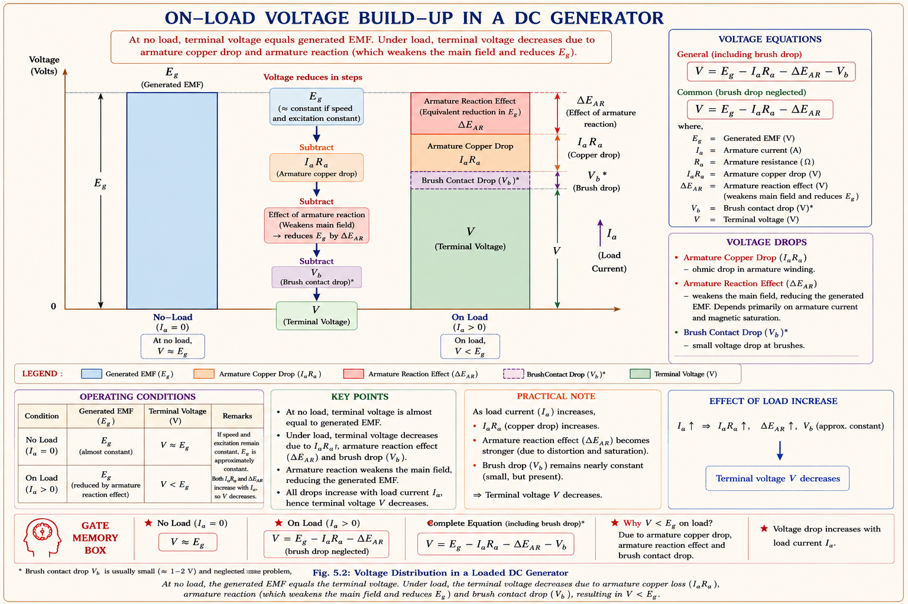
Many students treat armature reaction drop and IaRa drop as the same thing. They are not: IaRa is a simple resistive (ohmic) drop, while armature-reaction drop arises from a change in useful flux and is therefore non-linear with load, becoming proportionally larger near and beyond rated current due to saturation and brush-shift effects.
A "characteristic" is simply a graph that shows how one electrical quantity of the generator varies with another, while everything else (speed, in particular) is held constant. These curves are the single most important tool for judging whether a given type of generator is suitable for a particular application.
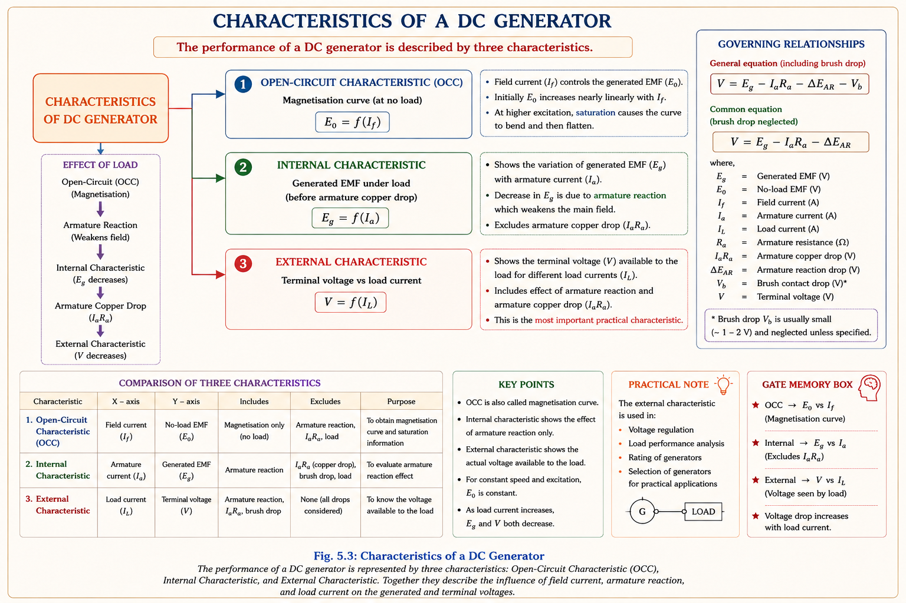
| Curve | Plotted As | What It Tells You |
|---|---|---|
| No-load / Magnetisation | \(E_0\) vs \(I_f\) (at constant \(N\)) | Purely a property of the magnetic circuit — same shape for every generator type |
| Internal characteristic | \(E_g\) vs \(I_a\) | Effect of armature reaction alone (excludes \(I_a R_a\) drop) — rarely measured directly, usually derived |
| External characteristic | \(V\) vs \(I_L\) | What the load actually experiences — includes both armature reaction and \(I_a R_a\) drop; the most exam-relevant curve |
For any generator: External characteristic curve always lies below the internal characteristic curve, and the internal characteristic always lies below (or on) the no-load curve, because each step subtracts an additional voltage drop.
In a separately excited generator, the field winding is energised from an independent DC source, not from the generator's own armature. This means the field current — and hence the flux under no-load conditions — is completely decoupled from whatever happens at the load terminals. It is the simplest generator to analyse because only two effects act on the output: armature reaction and IaRa drop.
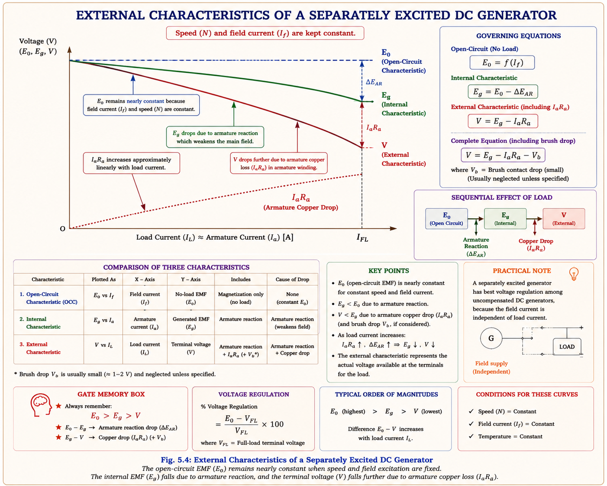
Because field flux is independent of load, a separately excited generator's voltage never collapses even under short-circuit — it simply limits at E₀/(Ra + external R), unlike a shunt generator whose field collapses along with terminal voltage on a fault.
In a shunt generator, the field winding is connected directly across the armature terminals, so the field current is self-supplied: I_f = V / R_sh. This self-excitation is elegant but has a consequence — since the field current depends on the very terminal voltage it helps create, any drop in V (from armature reaction or IaRa) reduces I_f, which reduces flux, which reduces E further. This is a cumulative, compounding effect, unlike the separately excited case.
A shunt generator relies on a small amount of residual magnetism left in the pole cores to begin building voltage. This tiny residual EMF drives a small field current, which strengthens the flux, which increases EMF further — a virtuous cycle that continues until the field-resistance line intersects the magnetisation curve.
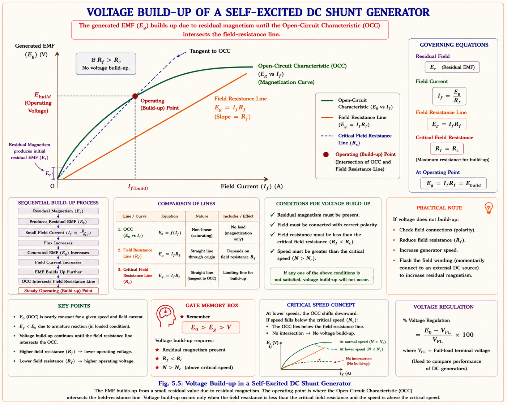
Once loaded, the shunt generator behaves well up to about its rated current — the field current stays nearly constant because V doesn't drop much yet. But beyond a certain load, the cumulative demagnetising spiral described above takes over rapidly: V collapses, which collapses I_f, which collapses flux — and the terminal voltage falls steeply even though load resistance is decreasing. This point is called the breakdown point, and beyond it the curve actually bends back toward the origin.
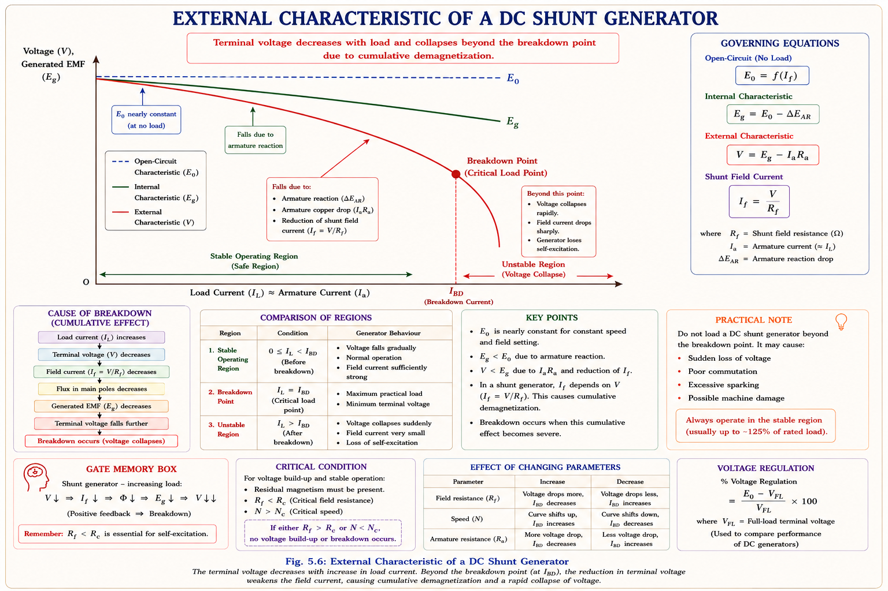
A shunt generator is naturally self-protecting against dead short-circuit — as current tries to rise, V collapses, which collapses field current and flux, so short-circuit current settles to a small value rather than the enormous magnitude a low-resistance short would otherwise imply. This is very different from a separately excited machine.
Shunt generators are used as small DC power supplies and are almost exclusively favoured for battery charging, because the naturally falling characteristic beyond breakdown matches the tapering charge-current requirement of a battery as it approaches full charge. They were also historically used, together with separately excited machines, in the excitation systems of large power-plant generators.
In a series generator, the field winding carries the full load current — it is connected in series with both the armature and the external load. As load increases, the field current increases proportionally, so (up to saturation) flux increases too, and the generated EMF rises with load rather than falling. This is the exact opposite behaviour of a shunt generator.
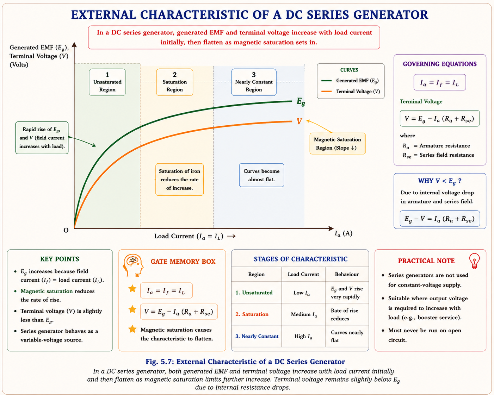
A series generator's rising output is exactly what's needed to compensate for the voltage drop that builds up along a long DC feeder as load increases. Connected in series with the feeder as a booster, it adds just enough extra voltage to offset the line drop, keeping the voltage at the far end roughly constant — a technique historically important in DC distribution systems.
A series generator cannot be used as a general-purpose power source because its voltage depends entirely on load current — at no load (Ia = 0) it produces almost no voltage, and voltage keeps changing as connected load changes. This makes it useless for lighting or general consumer loads, which need a nearly constant voltage.
A compound generator carries both a shunt field winding and a series field winding on the same pole. The idea is to combine the strengths of both machines: the shunt winding gives a roughly constant voltage reference, while the series winding — carrying load current — can be arranged to either add to or subtract from the shunt flux as load increases. This single design choice creates two fundamentally different machines.
In cumulative compounding, the series field m.m.f. is connected so that it aids the shunt field m.m.f. As load current rises, the series flux adds to the shunt flux, so total flux — and hence EMF — rises with load, which can be tuned to exactly cancel the IaRa and armature-reaction drops.
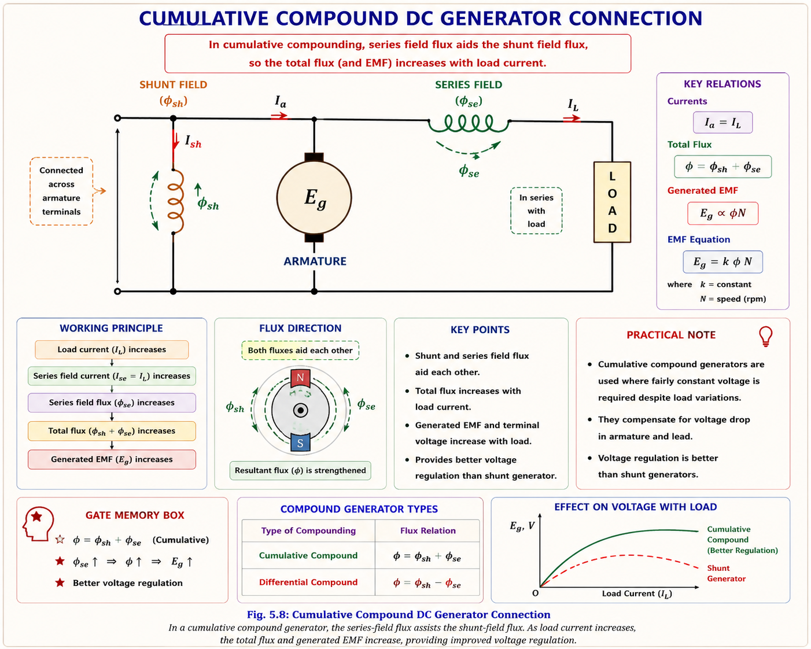
Depending on how strongly the series winding is designed (its number of turns relative to the shunt winding), three sub-types of cumulative compounding arise:
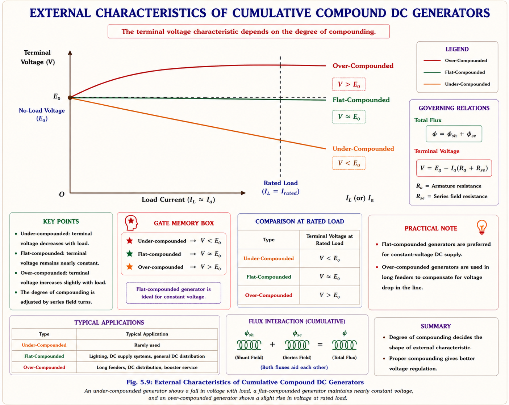
| Sub-type | Series Winding Strength | Voltage at Rated Load | Typical Use |
|---|---|---|---|
| Over-compound | Strong (many turns) | Rises above E₀ | Feeding a distant load through a feeder with resistance drop |
| Flat / Level compound | Just enough | Equal to E₀ (V constant) | General-purpose constant-voltage supply |
| Under-compound | Weak | Below E₀ but above plain-shunt droop | Mild compensation applications |
Because compounding can be tuned by adjusting series-winding turns or by adding a diverter resistance across it, a cumulative compound generator can be made flat, over, or under compounded to match almost any application — making it the most flexible and hence most commercially manufactured DC generator for large-rating DC power supplies.
In differential compounding, the series winding m.m.f. is connected to oppose the shunt field. As load current increases, the net flux actually decreases, so the terminal voltage falls sharply with load — much faster than in a plain shunt generator.
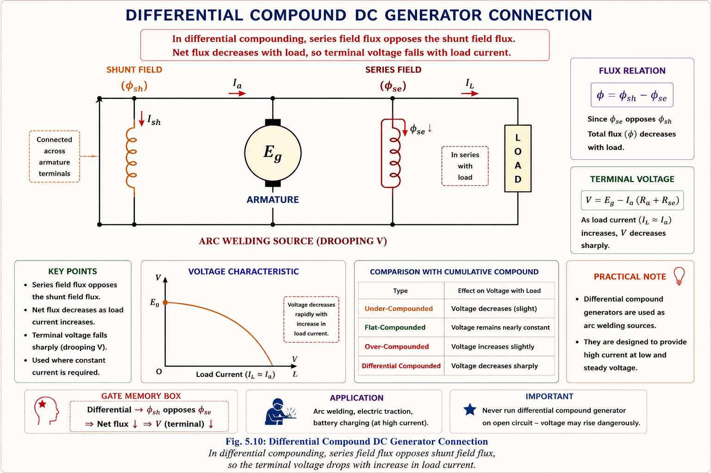
A steeply drooping voltage-vs-current characteristic is exactly what an arc welding supply needs: as the arc gap changes and current tends to rise, the voltage collapses quickly, naturally limiting the welding current to a safe, controllable value without external current-limiting circuitry. This is why differentially compounded generators are used specifically for arc welding, not for ordinary power supply.
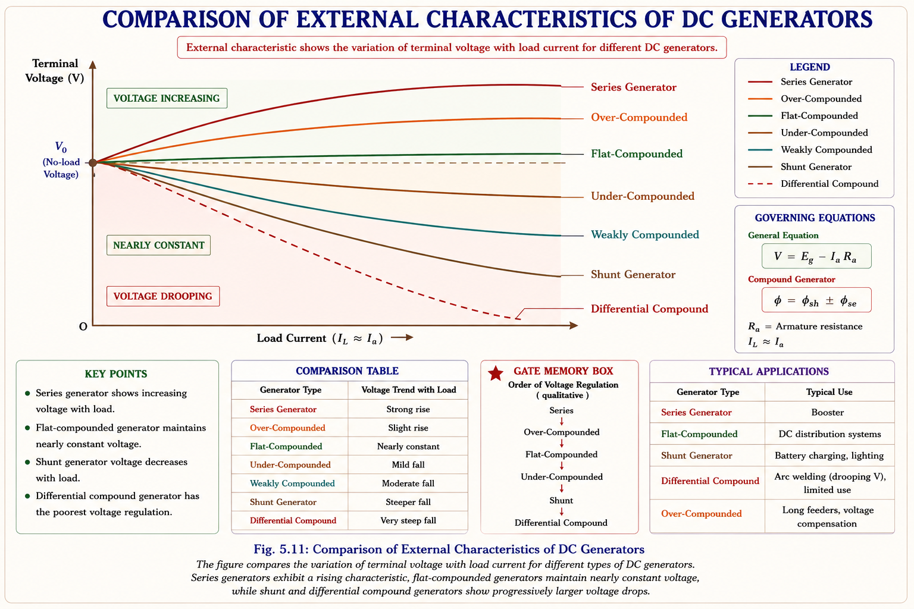
Voltage regulation quantifies how much a generator's terminal voltage changes when the rated load is removed, with field current (or field resistance, in a self-excited machine) and speed held constant. It is a single number that summarises the "quality" of the external characteristic — how close it stays to flat.
where E is the no-load induced voltage (field current and speed unchanged from the loaded condition) and V is the rated terminal voltage at full load.
| Generator Type | Typical Voltage Regulation | Remark |
|---|---|---|
| Flat / level compound | ≈ 0% | Ideal — E = V at rated load, best suited for ordinary load supply |
| Over-compound | Negative | V at full load exceeds no-load V — unsuitable for ordinary loads, useful for feeder-drop compensation |
| Series generator | Large negative | V rises steeply with load — never used for constant-voltage supply |
| Under-compound / Shunt | Small to moderate positive | Acceptable for many practical loads within the operating region |
| Differential compound | Large positive | Deliberately poor regulation — desirable for current-limited duty (welding) |
Voltage regulation is defined using no-load voltage E in the numerator. If V (full load) is larger than E (no load) — as in an over-compound machine — % VR comes out negative. Students frequently get the sign backwards; always check whether the curve rises or falls with load before assigning a sign.
In any power plant, several generators run together across common terminals called bus bars, sharing the total load between them. This is standard practice for good reasons:
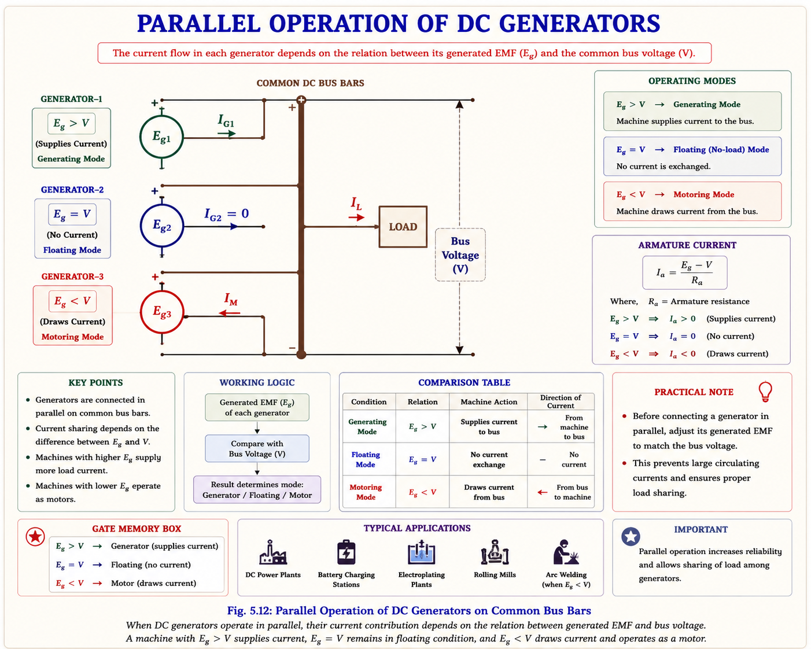
Consider two generators sharing a common load at bus voltage V, with induced EMFs E_g1, E_g2 and armature resistances R_a1, R_a2:
Load sharing depends directly on each machine's induced EMF — the generator with higher E_g takes more of the load. For the sharing to remain stable, each machine's voltage-vs-current characteristic must be drooping, not rising: if a generator's voltage were to rise as it took more load, it would keep grabbing an ever-larger share until it alone carried the whole load, starving the other machine (or driving it into motoring mode).
Because a series generator's voltage rises with its own armature current, two series (or cumulative compound) generators connected directly in parallel are inherently unstable: if one machine momentarily takes slightly more current, its series flux — and hence its EMF — rises, which makes it take even more current, in a runaway cycle. The other machine's current (and EMF) falls correspondingly, eventually driving it into motoring mode. An equalizer bus solves this.
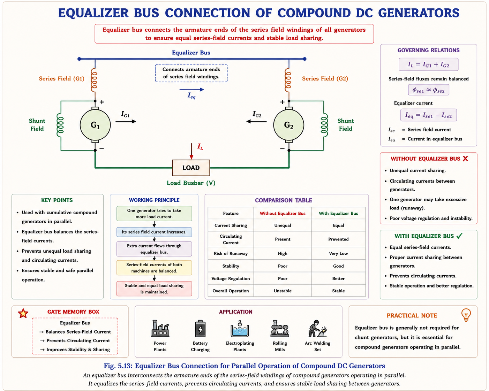
A plain shunt generator's naturally drooping external characteristic makes parallel operation inherently stable without any equalizer. Between two shunt generators, whichever machine has the more drooping (steeper) characteristic will automatically share less load, and vice versa — so operators can adjust field rheostats to shift load between machines according to their individual ratings.
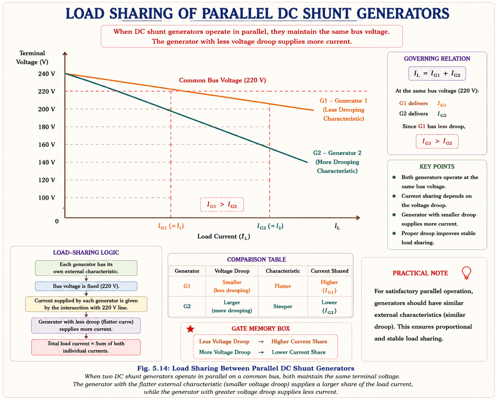
Given: Z = 720 conductors, P = 6 poles, A = 2 parallel paths, total armature current I_a = 50 A.
The general form students should remember is:
This exact style of AT/pole computation (given Z, A, P and Ia, sometimes with a brush shift angle) is a classic GATE/PSU numerical. Always identify A correctly: A = 2 for wave winding, A = P for lap winding (simplex, unless stated otherwise).
Step 1 — Field current:
Step 2 — Armature current:
Step 3 — Generated EMF:
Step 4 — Voltage Regulation (using given no-load voltage E = 230 V, same I_f):
Answer: E_g (loaded) = 226.1 V; Voltage Regulation ≈ 4.55%.
Total computed current = 200 + 200 = 400 A, which does not match the stated 250 A load — this tells us the assumed bus voltage of 220 V is inconsistent with the given EMFs and resistances. In an actual problem, V must be solved for using \(I_A + I_B = I_{load}\) simultaneously with both current equations.
Set up \( \frac{E_A-V}{R_{aA}} + \frac{E_B-V}{R_{aB}} = I_{load} \) and solve the single linear equation for the unknown bus voltage V, then back-substitute to find I_A and I_B individually. Never assume V equals a rated value unless the problem states the machines are held at that exact voltage.
Based on the recurring pattern of questions across GATE EE and IES E&T in the DC Machines unit:
In a DC generator with brushes on the geometric neutral axis, the net effect of armature reaction on the generated EMF, as load increases, is best described as:
Explanation: With brushes on the geometric neutral, armature reaction is mainly cross-magnetising in an idealised linear magnetic circuit — but due to saturation of the leading pole tips (where flux adds) versus desaturation of the trailing pole tips (where flux subtracts), the net effect in a real, saturated machine is a small but real demagnetising component, which is why terminal voltage droops with load even in the internal characteristic.
A DC series generator is unsuitable for ordinary lighting/power supply mainly because:
Explanation: Since the field winding carries load current, at no load (Ia ≈ 0) there is negligible field flux and hence negligible EMF. As load current changes, the voltage changes drastically — the opposite of what a constant-voltage supply requires.
The equalizer bus connecting two series (or cumulative compound) DC generators operating in parallel primarily serves to:
Explanation: Without an equalizer, any small imbalance in current causes the series flux (and EMF) of the more-loaded machine to rise further, worsening the imbalance cumulatively. The equalizer ties the series-winding ends together so that extra current divides between both windings, raising both machines' flux together and restoring balance.
For a DC over-compound generator, the percentage voltage regulation, computed with the standard formula %VR = (E−V)/V × 100, is:
Explanation: In over-compounding, the series field is strong enough that full-load V is actually greater than the no-load E (measured at the same field-rheostat setting), so E − V is negative, giving negative %VR. This is a frequently tested sign-based conceptual trap.
Series → Over-compound → Flat-compound → Under-compound → Differential — this is the exact order of external characteristics from "most rising" to "most falling" (Fig 1.11). Remembering SOFUD instantly tells you the relative ranking for any comparison question.
Field connection recall: "Shunt is Slim (thin wire, high resistance, across the line), Series is Stout (thick wire, low resistance, carries full load current)" — helps recall why shunt field current is small and series field current equals armature current.
Field independent of V. Flattest droop of uncompensated types. Used in excitation systems, Ward-Leonard control, aircraft/ship DC supply.
Self-excited; cumulative demagnetising effect beyond breakdown point (~125% rated load). Self-limiting on short circuit. Used for battery charging.
Rising characteristic; field carries full load current. Not for ordinary supply — used as a booster on long DC feeders.
Series aids shunt. Over/flat/under sub-types by winding strength. Flat-compound gives ~0% VR — most widely manufactured DC generator.
Series opposes shunt. Steep voltage fall with load — deliberately used for current-limited arc-welding supply.
Requires equal terminal voltage and matched polarity. Stable sharing needs drooping characteristics; series/compound machines need an equalizer bus.
Even though bulk DC generation has largely been replaced by rectified AC in modern plants, PSU interviewers still probe this topic because the underlying ideas — self-excitation stability, cumulative feedback effects, and load-sharing via droop characteristics — reappear directly in modern power-electronic converter control (droop control of parallel inverters/DC-DC converters in microgrids is a direct descendant of shunt-generator load-sharing theory). Expect questions on why certain machines were chosen for specific duties (welding, battery charging, boosters) as a test of applied understanding, not just formula recall.
Have a question on DC generator characteristics, voltage regulation, or parallel operation? Type below or pick a suggestion.